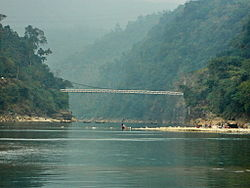

Jaflong
Jaflong (Bengali: জাফলং) is a hill station and tourist destination in the Division of Sylhet, Bangladesh. It is located in Gowainghat Upazila of Sylhet District and situated at the border between Bangladesh and the Indian state of Meghalaya, overshadowed by subtropical mountains and rainforests. jaflong is known for its stone collections and is home of the Khasi tribe.
Introduction
Jaflong is a tourist spot in Sylhet division. It is about 60 km from Sylhet town and takes two hours drive to reach there. Jaflong located amidst tea gardens and hills. It is situated besides the river Sari in the lap of Hill Khashia.
The Mari river is coming from the great Himalayas of India, which bringing million tons of stone boulders with its tide. You can watch the stone collection from the river in Jaflong as well as you can enjoy the boating in the river Mari. Jaflong is totally a hilly area of real natural beauty where hills are greenish with the forests. Lots of wild animal lives in this forest, so you need to be careful to enter in the forest alone. You can see the lifestyle of Tribe Khashia in Jaflong. If you intend to visit Jaflong it is advisable to start from Sylhet in the early morning so that you can comeback by evening covering the other tourists spots of nearby areas of Jaflong. The other tourist areas nearby Jaflong are Tamabil, Sripur and Jaintapur.
Stone Crushing
The land grabbers occupied government khas land and reserved forestland and extracted stone by cutting small hills polluting the environment of Jaflong. They also established crushing mills on the forestland without permission from government
Forestation Program
In early 2005, Laskar Muqsudur Rahman, Deputy Conservator of Forests, Sylhet Forest Division, observed that Jaflong that he heard in his boyhood as the 'lungs' of Greater Sylhet was at stake due to on going encroachments and establishment of unauthorized stone crushing mills. He took initiatives to recover the land and establish a recreation-cum-botanical park named as 'Jaflong Green Park'. The first foundation stone for the thematic Green Park at Jaflong was laid by Laskar Muqsudur Rahman, Deputy Conservator of Forests in 2005 with the cooperation of local forest staffs led by Forest Ranger Mohammad Ali. Nonetheless, at the inception it was a challenging task due to local conflicts and procedural constraints. The forestation program in Jaflong Green Park has been started under supervision of the joint forces, Jaflong Foundation and Forest Department. They have jointly taken up the forestation program with about 100 hectares of grabbed land. Under the forestation program, various types of trees, including hybrid Akash-moni, are being planted in the park to maintain ecological balance.
Top Things To Do In Jaflong
You can admire the natural greenery of while your way is driving. In the Mari river, you can enjoy the boat ride as well the huge variety of stone collection. You can see fishes, stones all through the clear crystal water of the river. There you will find tea, orange and jackfruit gardens. If you wish, you can take a dippy dip in the river. The boat trip will cost around BDT 250 but will accommodate the whole family. You can roam around the river and see the hanging bridge
You will get to know the culture of the thousand years old inhabitant, Tribe Khasia in there. They are indigenous people of the hills, living in total harmony with nature of the mountain. Their little villages are known as “Punjees” which are full of their pretty small houses on bamboo slits. The Khasi live simply growing Paan (betel leaf), Supari (Betel nut) and fishing. You may come across the Paan-supari plantation when you go through their villages. You will be surprised to learn that once these simply amazing people were a fierce, warlike tribe. When you venture into the forest, you can reach the palace of the Khasia king. It’s a modest wooden affair.
In the nearby Dauki Bazar, you may buy some stone showpieces. You can also get hold of beautiful clothes made at local cottage industries at the Bollar Ghat. Shops there sell every kind items that display local craftsmanship in carving stone souvenirs, sarees, beddings, sheetal pati or rugs, etc. If you hire a boat, there is a hanging bridge where you can visit.
Jaflong Bangladesh, being a real hilly forest area, it is also a good place for hill tracking. You may come across many wild animals in the forest. It is not a good idea to go there alone. In the grounds, you can get a view of an orange grove, one of Sylhet’s disappearing attractions.
There are two very famous religious spots there. The Major of Shahajalal and Shah Amanat where thousands of tourists find spiritual peace. The city of Sylhet is also called Shah Jalal Nagar.
Best Hotel & Resorts List In Jaflong
There are some hotels and resorts at Sylhet. As the destination is located only 60 km from the town of Sylhet, majority tourists can stay back at the town. They can make the journey and come back the same day. If you are looking for luxurious stay following are good choices Jaflong, Sylhet hotels:
Hotel Noorjahan Grand- Waves 1 Daraga gate and cost is around USD 70. Hotel Supreme & Exotica Restaurant- East Mirabazar, Tamabil Road Rose View Hotel, Shahjalal Uposhor, Sylhet, and the cost is approximately USD 100 per night. Hotel Nirvana Inn- Mirzajangal, Ramerdighir Par, Shop mil 44 and cost 43.80 USD per night Nazimgarh Resorts- Khadimnagar, Sylhet is costly which can come to USD 141- 153 For hotels in moderate cost you can consider the following accommodation facilities in Sylhet with cost per night: BGB Resort at Tamabil- Costs around USD 31 Hotel Holy Gate- East Dargah Gate, Sylhet 30 Hotel Star Pacific- 982 Dargah Gate, Sylhet and cost around USD 46 Excelsior Sylhet Hotel & Resort- Zakaria City, Khadimpara, Sylhet City Britannia Hotel- Ambarkhana Rd, Sylhet 26 Jainta Hill’s Resort, here at Tamabil, costing ranges from USD 28- 67